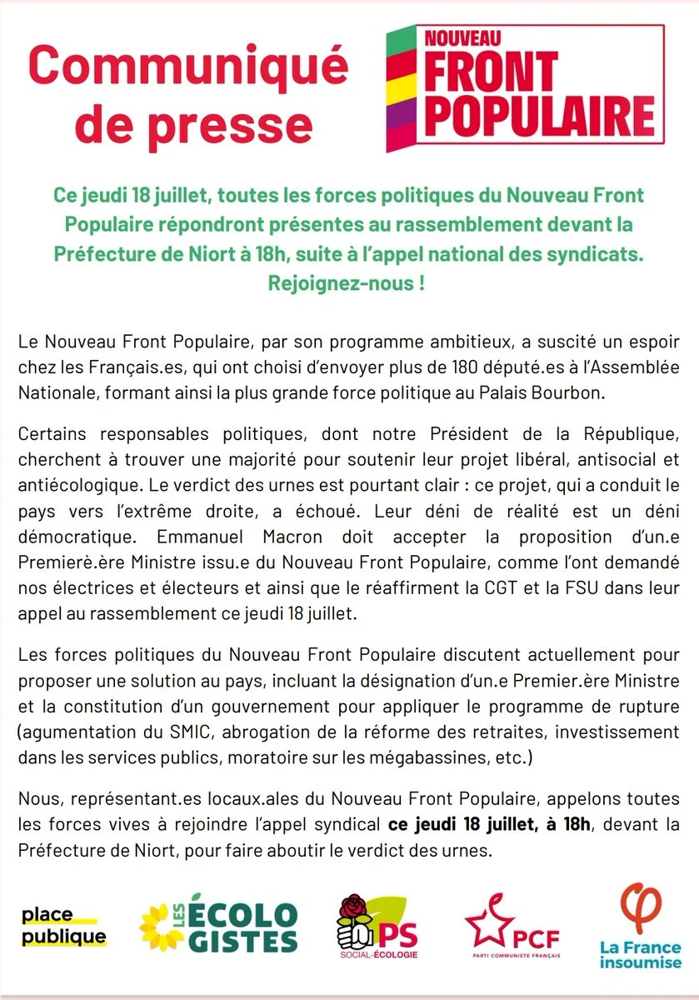

Publication sur X
18 juillet 2024 à Niort. Le Nouveau Front populaire rejoint l’appel syndical
Date de publication sur X · 17 juillet 2024
Repères éditoriaux
Nous avons relayé le communiqué des organisations du Nouveau Front populaire qui rejoignaient l’appel de la CGT et de la FSU devant la préfecture.
Texte de la publication sur X
Communiqué des organisations du #nouveaufrontpopulaire appelant à rejoindre le rassemblement prévu par la CGT et la FSU ce jeudi 18 juillet devant la préfecture à #Niort https://t.co/UQEa4pWfjF

Sources
PCF 79 · @79Parti sur X · AR-0005-TW-1813459401677640191
À lire aussi · Le 23 avril à Niort, une nouvelle mobilisation contre la réforme de l’assurance chômage
Publications associées
- À Niort le 18 juillet, le Nouveau Front populaire rejoint l’appel syndical · Même communiqué relayé sur Facebook